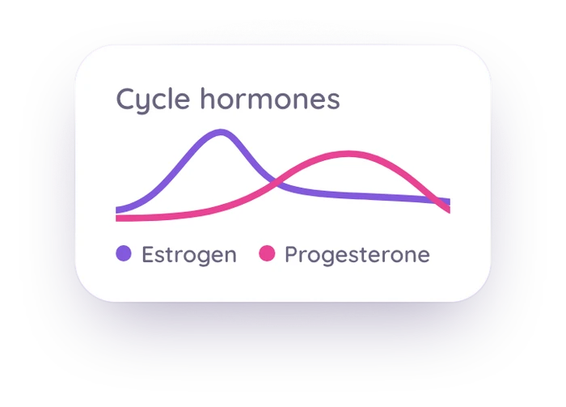

Bring your Mira or Inito readings into Veya
Your hormone numbers live in the monitor's own app. Upload a screenshot of your chart in the Veya web app, check what Veya read against the image, and save the readings next to your cycle, sleep, and mood.
Download VeyaThe import runs in the web app: open the import page in any browser.

On a computer?
Scan to download on your phone.

Built for Mira and Inito readings
Import from a screenshot
Choose Mira chart screenshot or Inito chart screenshot and upload an image of your monitor app. Veya reads LH, E3G, and PdG for each cycle day, plus FSH where your app shows it.
Check it before it saves
A review screen puts your screenshot beside the readings Veya found, one row per cycle day. Fix any value you like. Nothing is saved until you confirm.
Which screenshot to take
For Inito, use the table (list) view, which shows exact values. Line charts are read approximately. For Mira, screenshot one cycle at a time with the numbers showing, and import two screenshots one after the other if a cycle runs past one screen.
Next to everything else
Saved readings go into your hormone history beside your cycle, sleep, mood, and symptoms.
Kept separate from lab panels
Monitor readings are stored apart from the urine metrics that come from lab panels. The two are measured differently, and Veya doesn't blend them.
Not through Apple Health
This doesn't go through Apple Health. Apple Health has no field for LH, E3G, or PdG concentrations, so you upload an image and Veya reads it.
See how it all connects
Once your readings are saved, they sit in your hormone history beside your logged cycle, sleep, mood, and symptoms, with your wearable data on the same timeline. On iPhone, Apple Watch, Oura, WHOOP and Garmin data arrives through Apple Health. In the web app, Oura and Withings connect directly. You can look at a surge day and see how you slept before it and how you felt after. See how those signals line up across a cycle. What the numbers mean for you is a question for you and your clinician. Veya shows you the record.
What you can log
Private by default
Veya keeps your screenshot until you delete it, so crop out your name, email, or account details before you upload. Your data is encrypted and stored securely, and Veya doesn't run ads or sell your data. You can export or delete what you've logged at any time.
Frequently asked questions
Want the step-by-step? Read how to import your Mira or Inito readings into Veya.
Put your monitor readings next to the rest of your data
Take a screenshot of your chart, upload it, check the rows, and save.
Download VeyaThe import runs in the web app: open the import page in any browser.
Tracking for other conditions
PCOS tracking · Perimenopause tracking · IVF tracking · Cycle syncing · Irregular cycle tracking · Cycle tracking with an IUD · Partner sharing · All conditions